Chapter 6 Spatial data and making maps
We will cover: 1. Basics of using sf package, converting lat/lon to a spatial data frame. 2. Importing shapefiles 3. Making a map of your lats/lons 4. Add inset map 5. Add scale bar, north arrow, labels 6. Add basemap 7. Writing map image and map files
Packages
library(ggplot2)
library(dplyr)
library(sf)
library(viridis)6.1 Load data
Latitude/Longitude data from IEP zooplankton data
# Latitude/Longitude data
stations_URL <- "https://portal.edirepository.org/nis/dataviewer?packageid=edi.539.3&entityid=343cb43b41eb112ac36b605f1cff1f92"
# Create a fake n variable to have something to plot.
stations <- readr::read_csv(stations_URL) %>%
mutate(n = round(runif(n = 1:nrow(.), min = 1, max = 100),0)) %>%
mutate(Source = factor(Source)) %>%
filter(!is.na(Latitude))
dplyr::glimpse(stations)## Rows: 368
## Columns: 5
## $ Source <fct> EMP, EMP, EMP, EMP, EMP, EMP, EMP, EMP, EMP, EMP, EMP, EMP, ~
## $ Station <chr> "NZ002", "NZ003", "NZ004", "NZ005", "NZ020", "NZ022", "NZ024~
## $ Latitude <dbl> 38.06028, 38.05250, 38.02917, 38.03167, 38.05972, 38.07194, ~
## $ Longitude <dbl> -122.2069, -122.1783, -122.1583, -122.1353, -122.1097, -122.~
## $ n <dbl> 63, 63, 46, 80, 66, 81, 47, 92, 22, 21, 85, 51, 12, 5, 54, 9~# create a subset of stations
stationlist_filt <- sample_n(stations, 20) %>% select(Station)
stationlist_filt <- stationlist_filt$StationShapefiles
# Delta waterways
library(deltamapr)
plot(WW_Delta)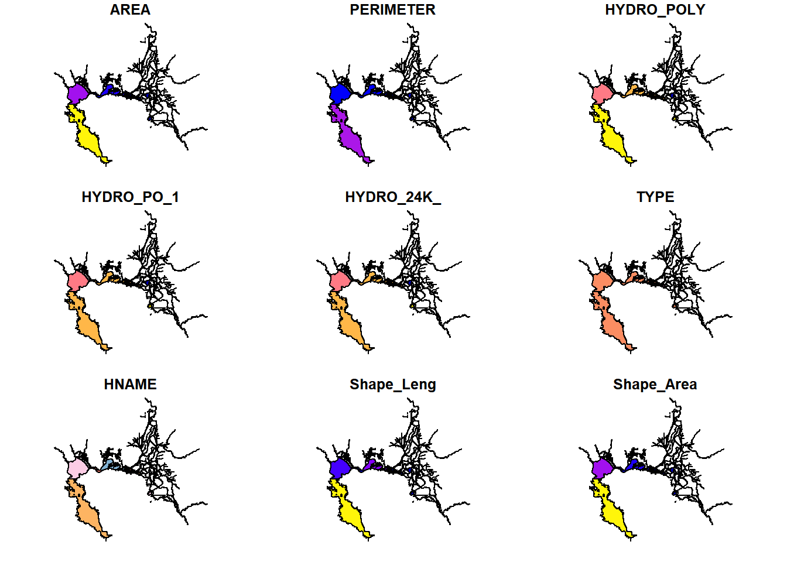
glimpse(WW_Delta)## Rows: 282
## Columns: 10
## $ AREA <dbl> 73544304.00, 87637.30, 7915130.00, 103906.00, 106371.00, 15~
## $ PERIMETER <dbl> 1033340.000, 3319.230, 87427.898, 2718.730, 2798.310, 3391.~
## $ HYDRO_POLY <int> 791, 1965, 1967, 1970, 1977, 1982, 1992, 2001, 2006, 2008, ~
## $ HYDRO_PO_1 <int> 797, 1963, 1965, 1969, 1974, 1978, 1989, 2008, 2012, 2011, ~
## $ HYDRO_24K_ <int> 798, 1964, 1966, 1970, 1975, 1979, 1990, 2009, 2013, 2012, ~
## $ TYPE <chr> "MR", "S", "C", "L", "L", "S", "S", "MR", "MR", "MR", "MR",~
## $ HNAME <chr> "SACRAMENTO RIVER", "W", "SACTO. R DEEP WATER SH CHAN", "GR~
## $ Shape_Leng <dbl> 2.448454165, 0.035719722, 0.828813375, 0.026377690, 0.02830~
## $ Shape_Area <dbl> 3.476418e-03, 9.063090e-06, 8.166341e-04, 1.074391e-05, 1.0~
## $ geometry <POLYGON [°]> POLYGON ((-121.5099 38.2471..., POLYGON ((-121.5673~# Regions
Regions <- deltamapr::R_EDSM_Subregions_Mahardja_FLOAT
plot(Regions)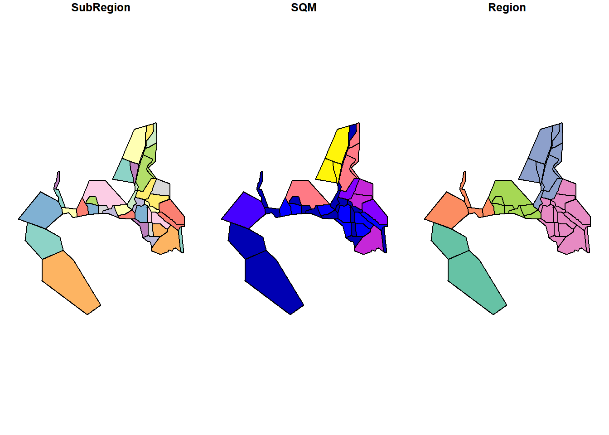
glimpse(Regions)## Rows: 40
## Columns: 4
## $ SubRegion <chr> "Cache Slough and Lindsey Slough", "Carquinez Strait", "Conf~
## $ SQM <dbl> 471689278, 48215634, 39171738, 182085789, 94761329, 23726124~
## $ Region <chr> "North", "Far West", "West", "South", "South", "South", "Wes~
## $ geometry <POLYGON [m]> POLYGON ((611964 4246976, 6..., POLYGON ((567190.8 4~# States
library(USAboundaries)
California_sf <- us_states(states = "California")
plot(California_sf[1])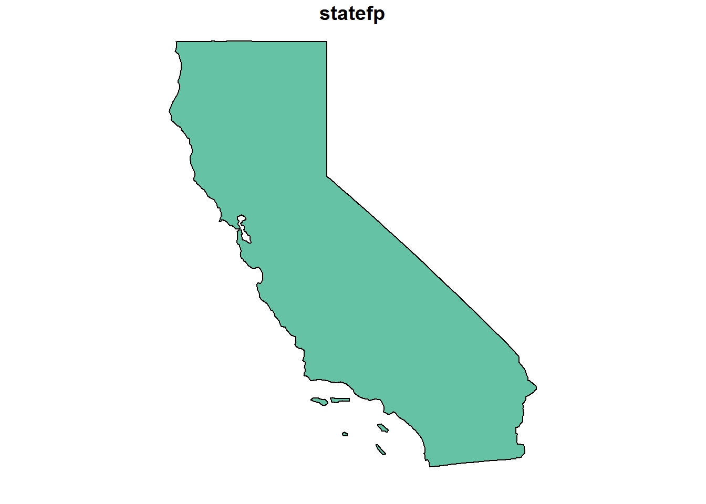
6.2 Get data into spatial form
# Define the projection of your points, usually WGS 84 (= crs 4326)
stations_sf <- st_as_sf(stations, coords = c("Longitude", "Latitude"), crs = 4326)
# Look at shapefile
head(stations_sf)## Simple feature collection with 6 features and 3 fields
## Geometry type: POINT
## Dimension: XY
## Bounding box: xmin: -122.2069 ymin: 38.02917 xmax: -122.0961 ymax: 38.07194
## Geodetic CRS: WGS 84
## # A tibble: 6 x 4
## Source Station n geometry
## <fct> <chr> <dbl> <POINT [°]>
## 1 EMP NZ002 63 (-122.2069 38.06028)
## 2 EMP NZ003 63 (-122.1783 38.0525)
## 3 EMP NZ004 46 (-122.1583 38.02917)
## 4 EMP NZ005 80 (-122.1353 38.03167)
## 5 EMP NZ020 66 (-122.1097 38.05972)
## 6 EMP NZ022 81 (-122.0961 38.07194)plot(stations_sf$geometry)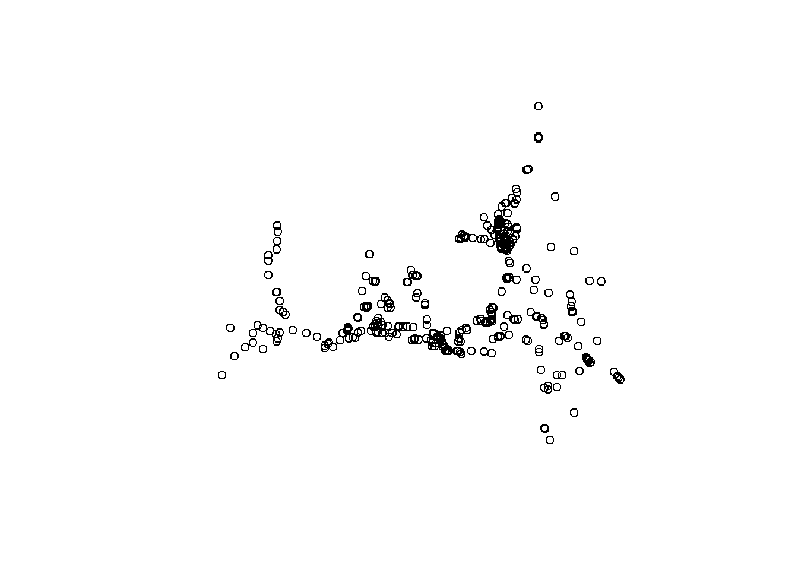
plot(stations_sf)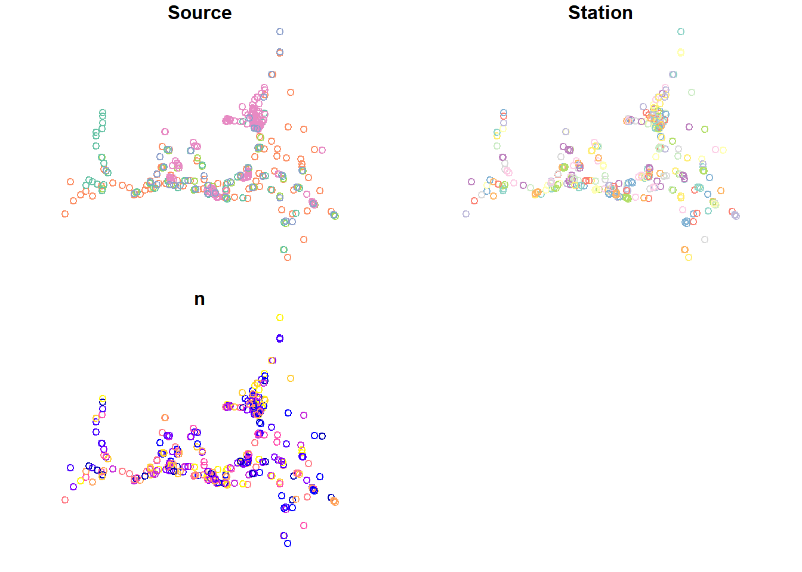
6.2.1 Spatial projections
You want to make sure all your different files are in the same projection, or they will look mis-aligned.
st_crs(WW_Delta) # In 4269## Coordinate Reference System:
## User input: NAD83
## wkt:
## GEOGCRS["NAD83",
## DATUM["North American Datum 1983",
## ELLIPSOID["GRS 1980",6378137,298.257222101,
## LENGTHUNIT["metre",1]]],
## PRIMEM["Greenwich",0,
## ANGLEUNIT["degree",0.0174532925199433]],
## CS[ellipsoidal,2],
## AXIS["latitude",north,
## ORDER[1],
## ANGLEUNIT["degree",0.0174532925199433]],
## AXIS["longitude",east,
## ORDER[2],
## ANGLEUNIT["degree",0.0174532925199433]],
## ID["EPSG",4269]]st_crs(stations_sf) # In 4326## Coordinate Reference System:
## User input: EPSG:4326
## wkt:
## GEOGCRS["WGS 84",
## DATUM["World Geodetic System 1984",
## ELLIPSOID["WGS 84",6378137,298.257223563,
## LENGTHUNIT["metre",1]]],
## PRIMEM["Greenwich",0,
## ANGLEUNIT["degree",0.0174532925199433]],
## CS[ellipsoidal,2],
## AXIS["geodetic latitude (Lat)",north,
## ORDER[1],
## ANGLEUNIT["degree",0.0174532925199433]],
## AXIS["geodetic longitude (Lon)",east,
## ORDER[2],
## ANGLEUNIT["degree",0.0174532925199433]],
## USAGE[
## SCOPE["Horizontal component of 3D system."],
## AREA["World."],
## BBOX[-90,-180,90,180]],
## ID["EPSG",4326]]st_crs(California_sf) # In 4326## Coordinate Reference System:
## User input: EPSG:4326
## wkt:
## GEOGCRS["WGS 84",
## DATUM["World Geodetic System 1984",
## ELLIPSOID["WGS 84",6378137,298.257223563,
## LENGTHUNIT["metre",1]]],
## PRIMEM["Greenwich",0,
## ANGLEUNIT["degree",0.0174532925199433]],
## CS[ellipsoidal,2],
## AXIS["geodetic latitude (Lat)",north,
## ORDER[1],
## ANGLEUNIT["degree",0.0174532925199433]],
## AXIS["geodetic longitude (Lon)",east,
## ORDER[2],
## ANGLEUNIT["degree",0.0174532925199433]],
## USAGE[
## SCOPE["Horizontal component of 3D system."],
## AREA["World."],
## BBOX[-90,-180,90,180]],
## ID["EPSG",4326]]stations_4269 <- st_transform(stations_sf, crs = 4269)
california_4269 <- st_transform(California_sf, crs = 4269)6.3 Basic Spatial Operations
Assign points to regions
Nearest neighbor
Intersections
6.4 Make maps
6.4.1 Basic maps
Color by Monitoring Program
ggplot() +
geom_sf(data = WW_Delta) +
geom_sf(data = stations_4269, aes(fill = Source), shape = 21) +
scale_fill_viridis(discrete = TRUE) +
ggtitle("Number of Zooplankton Samples by Station") +
theme_bw()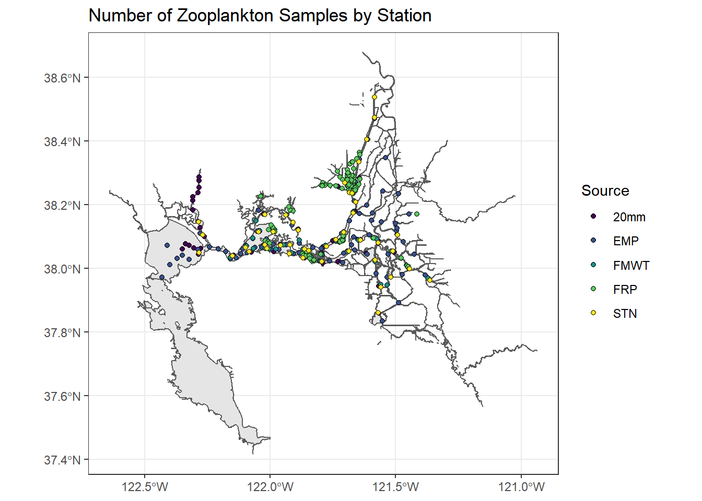
You can also modify the size of the points by size
# Making a smaller dataset
stations_filtered_4269 <- stations_4269 %>%
filter(Station %in% stationlist_filt)
(simplemap <- ggplot() +
geom_sf(data = WW_Delta, fill = "lightblue", color = "lightblue") +
geom_sf(data = stations_filtered_4269, aes(fill = Source, size = n), shape = 21, alpha = 0.7) +
scale_fill_viridis(discrete = TRUE, option = "plasma") +
scale_size_continuous(range = c(0,3)) +
ggtitle("Number of Zooplankton Samples by Station") +
theme_bw())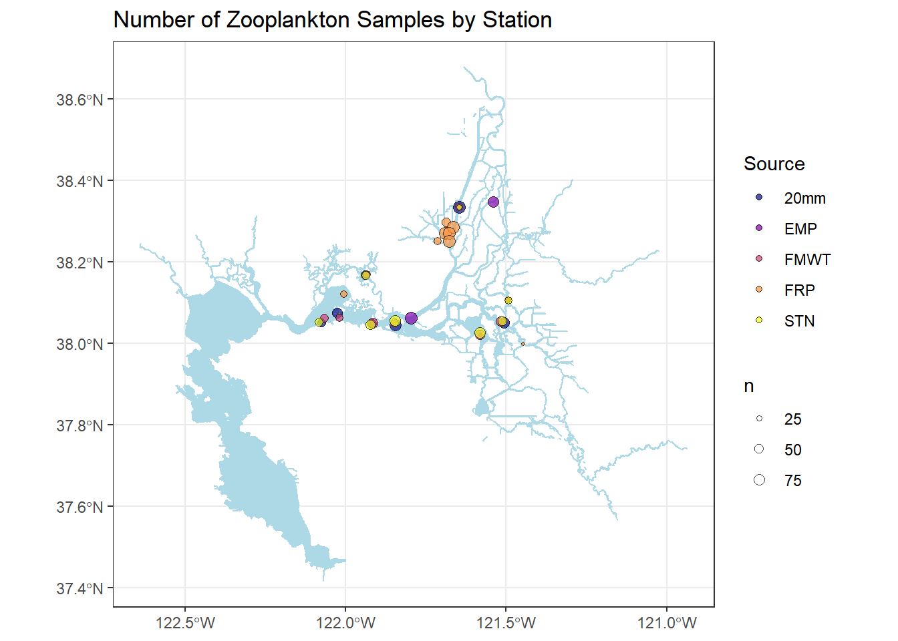
You can add region delineations as well
ggplot() +
geom_sf(data = WW_Delta, fill = "lightblue", color = "lightblue") +
geom_sf(data = Regions, aes(color = Region), alpha = 0.3) +
geom_sf(data = stations_filtered_4269, aes(fill = Source, size = n), shape = 21) +
scale_fill_viridis(discrete = TRUE, option = "plasma") +
scale_color_viridis(discrete = TRUE, option = "turbo") +
scale_size_continuous(range = c(0,3)) +
ggtitle("Number of Zooplankton Samples by Station") +
theme_bw()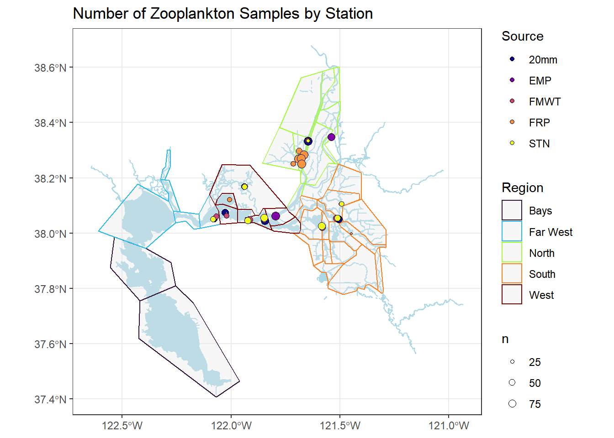
6.4.2 Add arrows and scale bars, dotted lines
require(ggspatial)
# https://www.r-spatial.org/r/2018/10/25/ggplot2-sf.html
(simplemap2 <- simplemap +
annotation_north_arrow(location = "tr", which_north = "true",
pad_x = unit(0.1, "in"), pad_y = unit(0.1, "in"),
style = north_arrow_fancy_orienteering) +
annotation_scale(location = "bl", bar_cols = c("pink", "white", "pink", "white")) +
theme(axis.title = element_blank(),
panel.grid.major = element_line(color = "grey80", linetype = "dashed", size = 0.5)))6.4.3 Add labels to map
# Adding text
simplemap2 +
geom_text(data = filter(stations, Station %in% stationlist_filt), aes(x = Longitude, y = Latitude, label = Station), size = 2, check_overlap = FALSE, color = "darkblue", nudge_x = 0.02, nudge_y = 0.02) +
annotate(geom = "text", x = -122.4, y = 37.85, label = "San Francisco Bay", fontface = "italic", color = "grey22", size = 3.5 ) 6.4.4 Add inset map
# Figure out boundary box for your stations; perhaps add a small buffer
insetbbox0 = st_as_sfc(st_bbox(WW_Delta))
insetbbox = st_buffer(insetbbox0, 0.2)
(inset <- ggplot() +
geom_sf(data = california_4269, fill = "white") +
geom_sf(data = insetbbox0, fill = NA, color = "red", size = 0.5) +
theme_void())Combine main map with inset map
Will need to play with where you want the inset to be so as not to overlap with your map
library(cowplot)
inset_map = ggdraw() +
draw_plot(simplemap2) +
draw_plot(inset, x = 0.15, y = 0.63, width = 0.3, height = 0.3)
inset_map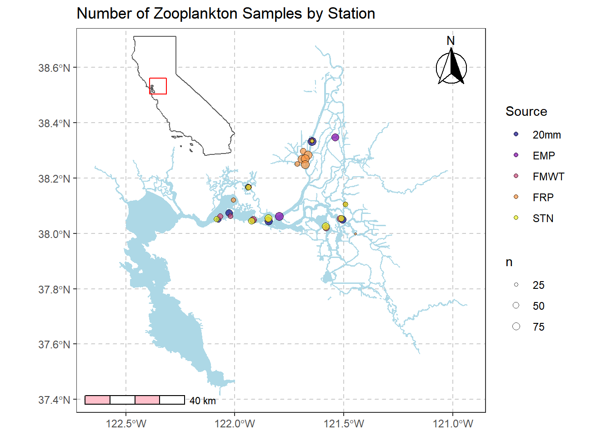
6.5 Basemaps
Download basemaps from get_stamenmap
library(ggmap)Define coordinate bounding box. You could also use lat/lon if you want.
buffer = 0.2
coordDict = list(
'minLat' = min(stations$Latitude) - buffer,
'maxLat' = max(stations$Latitude) -0.1,
'minLon' = min(stations$Longitude) - buffer,
'maxLon' = max(stations$Longitude) + buffer
)
# Create map object using your bounded coordinates
map_obj <- get_stamenmap(
bbox = c(left = coordDict[['minLon']], bottom = coordDict[['minLat']], right = coordDict[['maxLon']], top = coordDict[['maxLat']]), # the bounding box
zoom = 9, # zoom lvl; higher number = more detail (but also more processing power)
maptype = 'terrain-background'# type of basemap; 'terrain' is my default, but check help(get_stamenmap) for a full list
)Plot your basemap
# Plot the map
map <- ggmap(map_obj, legend = "right")
map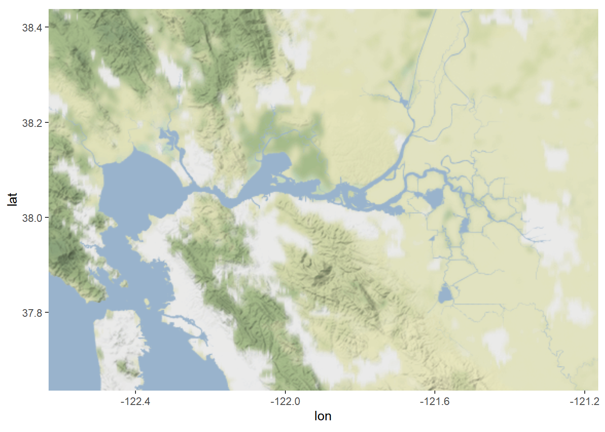
Add basemap to earlier map.
map2 <- ggmap(map_obj) +
geom_sf(data = WW_Delta, fill = "lightblue", color = "lightblue", inherit.aes = FALSE) +
geom_sf(data = stations_filtered_4269, aes(fill = Source), shape = 21, alpha = 0.7, size = 2.5, inherit.aes = FALSE) +
annotate(geom = "text", x = -122.4, y = 37.85, label = "San Francisco Bay", fontface = "italic", color = "grey22", size = 3.5 ) +
annotation_north_arrow(location = "tr", which_north = "true",
pad_x = unit(0.1, "in"), pad_y = unit(0.1, "in"),
style = north_arrow_fancy_orienteering) +
annotation_scale(location = "bl", bar_cols = c("black", "white", "black", "white")) +
scale_fill_viridis(discrete = TRUE, option = "plasma") +
ggtitle("Number of Zooplankton Samples by Station") +
theme_bw()+ theme(axis.title = element_blank(),
panel.grid.major = element_line(color = "grey80", linetype = "dashed", size = 0.5))
map2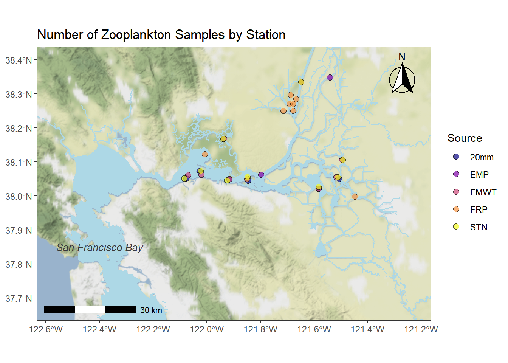